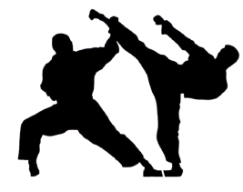

I am a lifelong learner with a passion for teaching and educational leadership. I started as a public school teacher in NYC before transitioning to higher education. I have served in various roles including director of a Holocaust resource center and dean of graduate studies.  My academic focus is on educational leadership and administration, and I strive to connect theory with practice through my research and writing. Outside of academia, I am also a martial artist and have taught thousands of students.